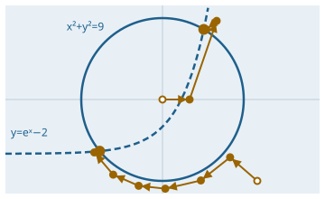

Describe, solve and check equation systems
Function overview for the presentation of the envisionz framework, as of 28 Sep 2026. The core of the CMDSolver: the modelling language NFML
(and the older CAS), expressions with automatic differentiation, built-in property and map functions, twelve solvers, diagnostics,
C and LaTeX output, converters from ACM, NPSS and Simulink, plus command line and embedding API.
For each method: purpose, API, use in the framework, applications, examples. The examples are shortened.
Many API names are German (e.g. Nachrechnung = off-design, Gegenprobe = counter-probe); they are shown unchanged.

SolverAPI and NEWTON_ARMIJO: two equations, two starting points, two solutions.Principles of the module
gruende(); ASSERT checks the solution; diagnostics name the under-determined block.Locale.ROOT so result files look the same everywhere.The modelling language NFML apps.eqnParser.nfml
NFML describes an equation system as a flowsheet: stream types, models with ports, instances and connections. Internally it is flattened into a flat model. Full grammar: NFML-SPRACHE.md and the manual NFML-Syntax-Referenz.pdf. Syntax reference → CAS syntax reference →
Flowsheet: DECLARE, MODEL, MACRO, PLANT
Stream types with default attributes per field; models with SET parameters (overridable per instance), ports, internal variables, equations and start values; assemblies as MACRO; the plant with instances, connections, boundary conditions and ASSERT. Each connection generates one equation per field.
Language features
REAL (Value, Lower, Upper, Spec: Fixed|Free, Unit, Description, Latex)- arrays (0-based), port arrays
aus[NA] (Gas), SET arraysSET WQ[NK] = [0.1, 0.2, 0.7] FORresolved at flatten time: arbitrary index arithmetic, nested- structural IF (folded away) and run-time IF (the solver picks the branch)
INITIALIZE,ASSERT,KENNFELD n = "file.CHR"(map),INTEGERPARAMETER
Used in
What for
Engine and gas turbine cycles, compressor meanline with blade elements, nozzles, secondary air systems, any steady network of components.
Example – smallest complete flowsheet (from examples/kochbuch/k1_grundgeruest.nfml, shortened)
DECLARE
STREAM Gas (M [Value: 20.0, Unit: "kg/s"] : TT [Value: 300.0, Unit: "K"] : PT [Value: 101325.0, Unit: "Pa"]);
$END
MODEL Drossel # throttle
SET ETA = 0.95, DPQ = 0.05;
STREAM INPUT : ein (Gas); OUTPUT : aus (Gas);
EQUATION
aus.PT = ein.PT * (1 - DPQ); aus.M = ein.M; aus.TT = ein.TT * ETA;
$END
PLANT
UNIT Drossel : D1; Drossel : D2 (ETA = 0.90); Senke : S1;
FLOWSHEET Gas : D1.aus = S1.ein;
EQUATION D1.ein.M = 20.0; D1.ein.TT = 300.0; D1.ein.PT = 101325.0;
ASSERT D1.aus.PT <= D1.ein.PT;
$ENDNfmlFlowsheet, NfmlFlattener, NfmlBinder – from text to equation system
Parser with line and column information, macro expansion, flattening (FOR, arrays, port arrays, structural IF), binding to SystemData. Run-time structure switching: changing a condition parameter triggers a re-bind before the next solve().
Methods
NfmlFlowsheet.isFlowsheet(text),flatten(...),bind(...)NfmlInclude(include libraries),NfmlPortCheck,NfmlAssertioncmd.NfmlFlat model.nfml -o:flat.nfml– show the flattened intermediate text
Used in
What for
Build large models from libraries, switch component variants via SET, spot structural problems early.
Expressions and derivatives apps.eqnParser.nfml
ExprParser, ExprEvaluator, ExprDerivative, Dual – one expression tree, three evaluations
Pratt parser on immutable AST nodes. On top: numerical evaluation, symbolic differentiation (sign-correct, including ABS and SQRT(x²)) and forward AD with dual numbers, which yields the residual and the full Jacobian row in one pass. Since CAS1 (2026-09-26) the legacy CAS path also runs on this core.
Building blocks
CasLexer(longest match, E notation as one token),Expr(Num, Ref, Unary, Binary, Compare, Logic, Not, Call)ExprParser,ExprEvaluator,ExprDerivative,ExprRewriteDual,DualEvaluator,NfmlDualBackend- functions:
SIN … TANH,LN,LOG10,EXP,SQRT,ABS,SQR,MIN/MAX(n arguments),TRUNCATE,ROUND
Used in
What for
Newton methods with an exact Jacobian, sensitivities, formulas as documentation.
Example – the probe every AD has to pass
d/dX SQRT(X^2) at X = -3 → -1 (not +1) // probe NfmlExportSelfTestBuilt-in functions apps.eqnParser.buildInFunctions
Called via CALL without a PROCEDURE block; the arity is checked. Two equivalent forms: CALL(CP) = CPOFT(T, WGR, FAR); and CP = CPOFT(T, WGR, FAR);
Thermo and combustion – 25 functions
cp, enthalpy and entropy of air, humid air and combustion gas (also JANAF forms), evaporation, combustion equilibrium and adiabatic flame temperature via envisionz.thermo.Combustion, standard atmosphere, saturation pressure after IAPWS-IF97.
Functions
CPOFT,CPOFTNOZ,CPOFTWARFAR,CPOFTJANAFHTOFTWARFAR,HTOFTJANAF,HTFUELOFTJANAF,HTOFTTREF,HTOFTDRYJANAF,HTOFTHOTJANAF,HTEVAP,HTWET,HTWETOFTWTREFSOFTWARFAR,SOFTDRYJANAF,SOFTWETJANAF,SOFTHOTJANAF,SEVAPOFTVERBXX,VERBTAD,MOFCONDIRATIO,TSOFALT,PSOFALT,PSOFALT_M,PSATOFT
Used in
What for
Properties in the cycle, combustor exit, flight altitude, humidity.
CPOFT returns J/(kg K), the JANAF enthalpies kJ/kg with their own reference point. Recompute a fixed point before setting bounds.ACM library and maps – 9 functions
The properties of the ACM library with the reference point of the source (so absolute H and S are comparable too) and map interpolation in 1, 2 and 3 dimensions from .CHR files. Against the source compiled with gfortran at 9,854 points ≤ 1e-15; four bugs of the Fortran map routines corrected.
Functions
ACM_TSOFALT,ACM_PSOFALT,ACM_PSATOFT,ACM_HOFT,ACM_SOFTP,ACM_CPOFTKF1D,KF2D,KF3D– map from the register, number at the UNIT
Used in
What for
Compressor and turbine maps in the engine model, continuing old ACM models.
Example – register a map in the deck and query it
KENNFELD 12 = "hdc_wc.CHR";
CALL(WC) = KF2D(KFNR, METHODE, NC, BETA); # map number, interpolation method, axesT-MATS – 6 functions
Properties after Frederick as t2hc/h2tc/pt2sc/sp2tc in T-MATS, inverses refined to rounding; tables linear and clamped at the edges. English units (°R, BTU/lbm, psia).
Functions
TMATS_T2H,TMATS_H2T,TMATS_PT2S,TMATS_SP2T,TMATS_TAB1,TMATS_TAB2
Used in
What for
Run T-MATS models from MATLAB/Simulink without MATLAB.
Twelve solvers behind one interface apps.eqnParser.solver
SolverType and SolverFactory
Shared loop in AbstractSolver: NaN detection, Jacobian built in parallel, bounds, stagnation window, absolute and relative convergence. The sparse LU (GSPAR) and GMRES come from framework-math. Probe Loeservergleichprobe: all methods, the same root; SolverFactory must map each type to the class it promises. Newton method, Jacobian and damping → Continuation methods →
| Type | Method | Good for |
|---|---|---|
NEWTON_ARMIJO | Newton-Raphson with Armijo line search, dense | small to medium models, default |
NEWTON_SPARSE, NEWTON_SPARSE_ARMIJO | Newton with sparse LU (GSPAR, MIN_FILL) | large flowsheets (hundreds to thousands of equations) |
NEWTON_GMRES | Newton-Krylov, GMRES with Eisenstat-Walker tolerance and Jacobi preconditioner, fallback to a direct step | large, well-conditioned systems |
BROYDEN, BROYDEN_SPARSE | quasi-Newton with rank-1 update | expensive residuals, few Jacobian rebuilds |
LEVENBERG_MARQUARDT | damped Gauss-Newton | poor start values, nearly singular Jacobian |
SMOOTH_NEWTON, TWO_PHASE | smoothed MIN/MAX/ABS (β = 200), two-stage | models with kinks and regime changes |
HOMOTOPY, ARC_LENGTH, ADAPTIVE_LAMBDA | continuation, arc length, adaptive λ | when Newton does not get there from the start point |
Example – choosing solver and scaling via the API
SolverResult r = new SolverAPI()
.loadModel("gasturbine.nfml")
.setSolverType(SolverType.NEWTON_SPARSE_ARMIJO)
.setScaling(ScalingStrategy.DYNAMIC_NORM)
.setTolerance(1e-9)
.solve();Scaling and normalisation apps.eqnParser.solver
ScalingStrategy – six methods
Engine models mix pascals, kelvins and kilograms per second: residuals differ by many orders of magnitude. Normalisation makes step and convergence criterion dimensionless.
Methods
NONE,DIAGONAL,UNIT_INTERVALEQUILIBRATE– Sinkhorn-Knopp R·J·C (JacobiEquilibratorfrom framework-math)STATIC_NORM– two-sided, frozen at the start pointDYNAMIC_NORM– two-sided per iteration, scaled convergence test
Used in
What for
Convergence where a physical tolerance lies below the rounding limit: with DYNAMIC_NORM Newton solves all 178 JT9D cases cold from the design point.
Example – command line
java cmd.CASSolver -I:jt9d.nfml -S:NEWTON_SPARSE_ARMIJO -SC:DYNAMIC_NORMStart values and robustness apps.eqnParser · apps.eqnParser.solver · cmd
AUTOINIT, restart ladder, similarity start, homotopy
Large networks rarely fail on the equations, mostly at the start. Hence: block-wise pre-initialisation (AutoInitSweep, BlockOrdnung), a ladder of restarts with other methods, start values as functions of the inlet quantities (SimilarityInit) and continuation methods with a configurable HomotopyConfig. Background, formulas and pseudocode →
Methods
setAutoInit(true),setAutoInitGross(true),setRestartLadder(true)setHomotopyConfig(cfg),setResidualNormalization(true)InitGuessApplier,InitialValueAnalyzer,PhysicalProjector(onto bounds)cmd.SimilarityInit -map: -out: -solver:– INITIALIZE block as a function of the inlet quantities
Used in
What for
Find the design point from scratch, trace characteristics, part load.
Diagnostics apps.eqnParser.diagnostics · cmd
ModelDiagnostics, TarjanSCC, ResidualDump, SolverMatrix
Structural analysis before solving: strongly connected blocks (Tarjan), bipartite matching over the sparsity pattern. On a dimension error the under-determined block is named. Plus the largest residuals at the start, focus analysis, HTML report and a comparison of all solvers on one model.
Methods
new ModelDiagnostics().analyze(sd, file)→DiagnosticsReport,DiagnosticsHtmlReportercheckBoundsForTarget(...),FocusAnalysis,ParseDumpcmd.ResidualDump– largest residuals with the variables involvedcmd.SolverMatrix model [-timeout:] [-scaling:]– all solvers, one table
Used in
What for
Find missing or duplicate boundary conditions, narrow down ill-posed blocks, pick the right solver.
Example – which solver gets there?
java cmd.SolverMatrix axial_v4_bladeelement.nfml -timeout:60 -scaling:EQUILIBRATEC source, LaTeX and derivative overview apps.eqnParser.nfml
NfmlCExport, NfmlLatexDoc, NfmlDerivDoc
Residuals and Jacobian as compilable C source with real variable names; gcc -Wall -Wextra compiles it without warnings, 1,596 values on the compressor model (396 equations) bit-identical to Java. Equations as MathJax HTML, with Latex="…" symbols. Derivative overview per equation in residual form.
Methods
NfmlCExport.erzeuge(sd, base)→ header, body,gruende()(reasons for omissions)NfmlLatexDoc.mathJaxHtml(sd, title),ExprLaTeXNfmlDerivDoc– F = left − (right) and ∂F/∂x per equation
Used in
What for
Embed a model in real-time or test-bed software, put equations into reports, have models reviewed.
Example – model as C source
SolverAPI api = new SolverAPI().loadModel("orifice_demo.nfml");
NfmlCExport.Ergebnis e = NfmlCExport.erzeuge(api.getSystemData(), "orifice");
// e.kopf(), e.rumpf(): modellResiduen(...), modellJacobi(...)Converters from other tools apps.eqnParser.acmf · .npss · .simulink
ACM → NFML and CAS
Reads an ACM library (.acmf) and writes it as an NFML module library plus one NFML and one CAS single deck per model. Known source errors are corrected by AcmfKorrekturen. Result: 31 of 31 models NFML = CAS (start residuals bit-identical, solutions ≤ 2e-13). Plus secondary air systems (SasKit) and GasTurb maps as .CHR.
Tools
cmd.AcmfNfml -acmf:Library.acmf -nfml:acm_library.nfmlcmd.AcmfEinzeln -nfml:…– single decks, run both, compare bothcmd.GasTurbChr -map: -ziel: -art: -einheit:,cmd.SasKit -out:AcmfSolCompare sol.dat model.nfml– against an ACM solution
Used in
What for
Keep running existing ACM models without ACM.
NPSS → NFML
Reads elements, values, ports, linkPorts, #include and .input, maps them to building blocks of the ACM library, hooks in the maps and computes design and off-design. JT9D: 21 blocks, 25 connections, 28 maps, 1,184 equations = 1,184 unknowns; 178 of 178 cases converged.
Classes and tool
NpssModell,NpssNachNfml,NpssNachrechnung,NpssVergleich,NpssUebersetzungcmd.NpssNfml -mdl:JT9D.mdl -nfml:jt9d.nfml [-rechnen:ja] [-nachrechnung:alle] [-soll:viewOut.csv]
Used in
What for
Check and recompute NPSS models, cross-check results independently.
Simulink (T-MATS) → NFML
Reads the .mdl text format and the MATLAB setup, traces signals through Goto/From, Mux/Demux and buses, turns each T-MATS block into a UNIT and the NR solver block into a deck model. Start values via a pre-run with AUTOINIT. JT9D: NFML equals the C bodies to 2e-13.
Classes and tool
SimulinkMdl,MatlabSetup,SimulinkNachNfml,SimulinkUebersetzungcmd.SimulinkNfml -mdl:JT9D_Model_SS.mdl -nfml:jt9d_tmats.nfml [-setup:…m] [-rechnen:ja]
Used in
What for
Run and check T-MATS models without MATLAB.
.slx) and transient models (open points NF11, NF13).Embedding and command line cmd
SolverAPI and SolverResult – the solver as a library
Fluent API without a framework dependency: load a model (file, text, SystemData), set and fix values, configure the solver, solve, query the result and violated ASSERTs. The result is immutable and writes itself as text or file.
Methods
loadModel,loadModelFromString,loadModelFromNfmlString,loadModelFromSystemDatasetVariableValue,setVariableFixed,setStartValue,loadVariableUpdatesetSolverType,setScaling,setTolerance,setMaxIterations,setSolverConfig,addLogHandlersolve()→SolverResult:isConverged,getValue,getAllValues,writeToFile;getViolatedAssertions()
Used in
What for
Embed the solver in your own programs, optimisation and parameter studies, coupling with other models.
Example – characteristic over inlet temperature (variable names illustrative)
SolverAPI api = new SolverAPI().loadModel("gasturbine.nfml").setAutoInit(true);
for (double tt = 250; tt <= 320; tt += 10) {
SolverResult r = api.setVariableFixed("AMB.TT", tt).solve();
if (r.isConverged()) System.out.printf("%6.1f %10.2f%n", tt, r.getValue("PERF.FN"));
}BatchRunner, TaskRunner, ModelRun, CASSolver
Parameter studies from a CSV (one operating point per row, warm start from the previous one, result CSV). Run scripts modelled on ACM tasks: one equation system, several runs with changing specification, loops with termination. Headless run with exit code 0/1 for scripts.
Tools
ModelRun model.nfml [-o:result.txt] [filter…]– 0 = converged and ASSERTs metCASSolver -I:model -S:SOLVER -SC:SCALING, batch with-I:study.csv- TaskRunner:
MODEL,FIX,FREE,SET,RUN,TRANSFER,LOOP … UNTIL … ENDLOOP,RELAX,SOLVER,ONFAIL
Used in
What for
Trace maps, design and off-design in one run, overnight computations, integration in CI.
Example 1 – study as CSV
PARTM.F060.TT, PARTM.F060.PT, AMB.PS
289.83, 196273.07, 98136.5
295.00, 200000.00, 98136.5 → study_results.csv: RUN, STATUS, ITER, FSUM, …Example 2 – run script: design, then off-design
MODEL turbofan.nfml
FIX PERF.FN = 120000
RUN Design
FREE PERF.FN
FIX BRENNER.TT4 = 1500
RUN PartLoad
PRINT PERF.FN PERF.SFCUsage matrix in the framework
Who uses the core today, counted in the source code (excluding probes).
| User | NFML/CAS | Solvers | Diagnostics | Export | Converters | What for |
|---|---|---|---|---|---|---|
| app-eqnparser | ● | ● | ● | ● | ● | GUI: editor, run, batch, diagnostics, C export, LaTeX, NPSS card |
| envisionz-examples/eqnparser | ● | ● | ● | ACM library, NPSS JT9D, T-MATS JT9D, cookbook | ||
| tools (SpecSwap, TaskProbe) | ● | ● | workspace tools | |||
| launcher-eqnparser-standalone (via app-eqnparser) | ● | ● | standalone delivery, GraalVM native image |